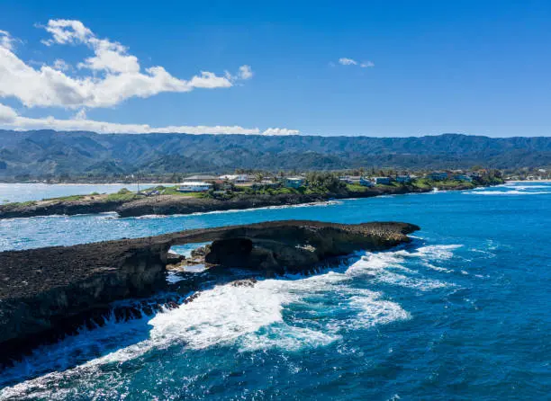
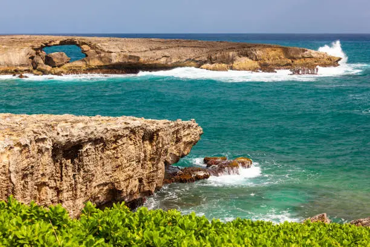

Laie Point
Laie Point is one of the most dramatic and breathtaking spots on Oahu's North Shore. Standing at the edge of the cliffs, you can watch massive waves crash through a natural rock arch and take in panoramic views of the ocean. It's a must-see for anyone visiting Laie.

